Taiyuange Lou
娄泰袁葛
Ph.D. Student in Optical Engineering, Tianjin University
School of Precision Instrument and Opto-Electronics Engineering, Tianjin University
I am a Ph.D. student in Optical Engineering at Tianjin University, where I also completed my B.Eng. and M.S. degrees. My interests lie in optical system design and computational imaging: designing deployable AI-assisted imaging systems on the one hand, and using computational methods to push past the physical limits of conventional imaging on the other.
Representative systems I have helped build and bring into practical use include a microscopic imaging system for particle image velocimetry, automotive DLP projection lenses, and a catadioptric ultra-short-throw projection system.
Research interests: Optical system design · Computational imaging · Freeform optics · AI-assisted design
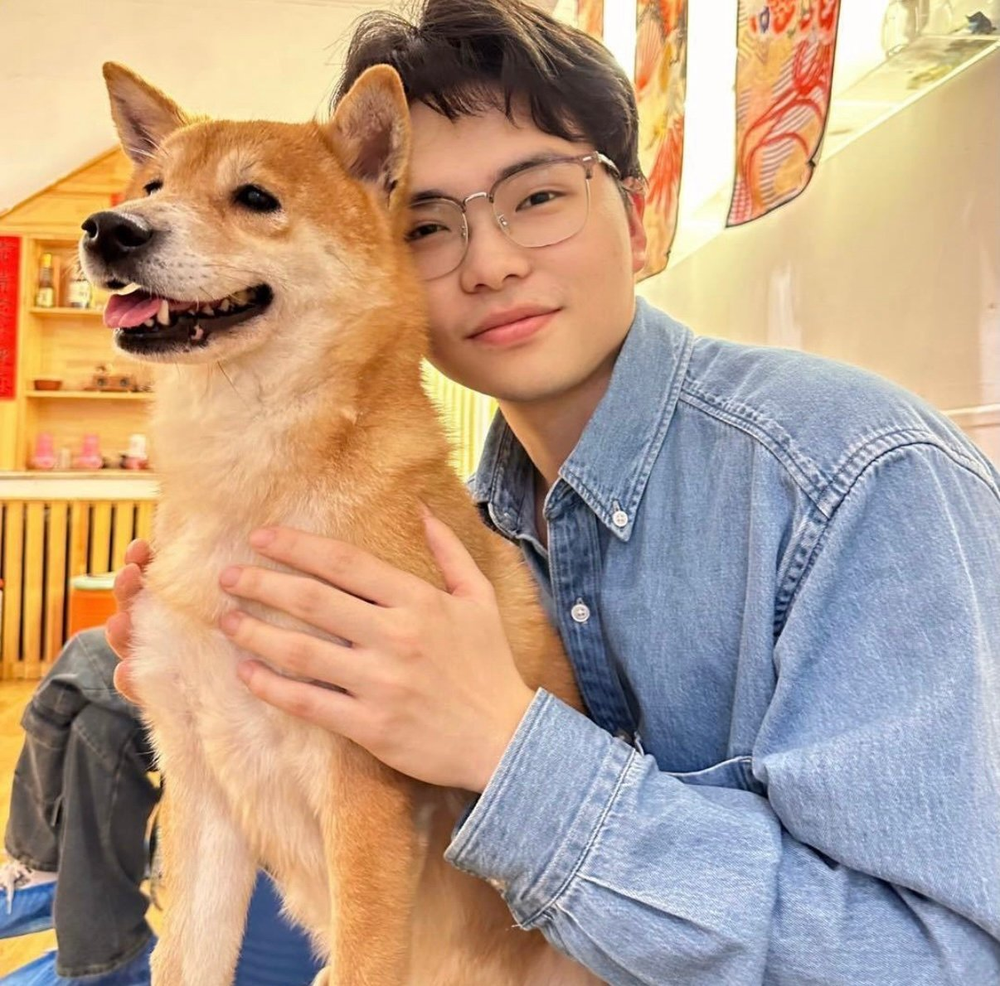
Education
Research: optical system design, computational imaging, freeform optics, AI-assisted design
GPA 3.6/4.0 Research: optical system design, computational imaging
Major rank 18/103 GPA 3.61/4.0
Publications
Monocular 3D Micro-PIV System Using Computational Imaging↗
IEEE Photonics Journal, vol. 17, no. 1, pp. 1–9, 2025SCI
Development of a 30× fluorescence detection microscope for particle image velocimetry↗
Acta Photonica Sinica, 54(3): 0318002, 2025中文核心
Patents
Monocular 3D micro-scale particle image velocimetry method and system based on computational imaging↗
Chinese Invention Patent CN118624933A · 2024-09-10Alt. source
Chinese Invention Patent CN121900023A · 2026-04-21Alt. source
A beam-expanding lens for laser scanning projection↗
Chinese Invention Patent CN122284065A · 2026-06-26Alt. source
A catadioptric ultra-short-throw projection lens and projection system with low throw ratio
Chinese Invention Patent · Under examination (no publication number yet)
Conferences
- 2023
Development of a dual-wedge scanning system for airborne laser communication
Linsen Duan, Taiyuange Lou, Lei Yang, Hongbo Xie
2023 Academic Conference of the Chinese Optical Society
Projects
Click an image to enlarge
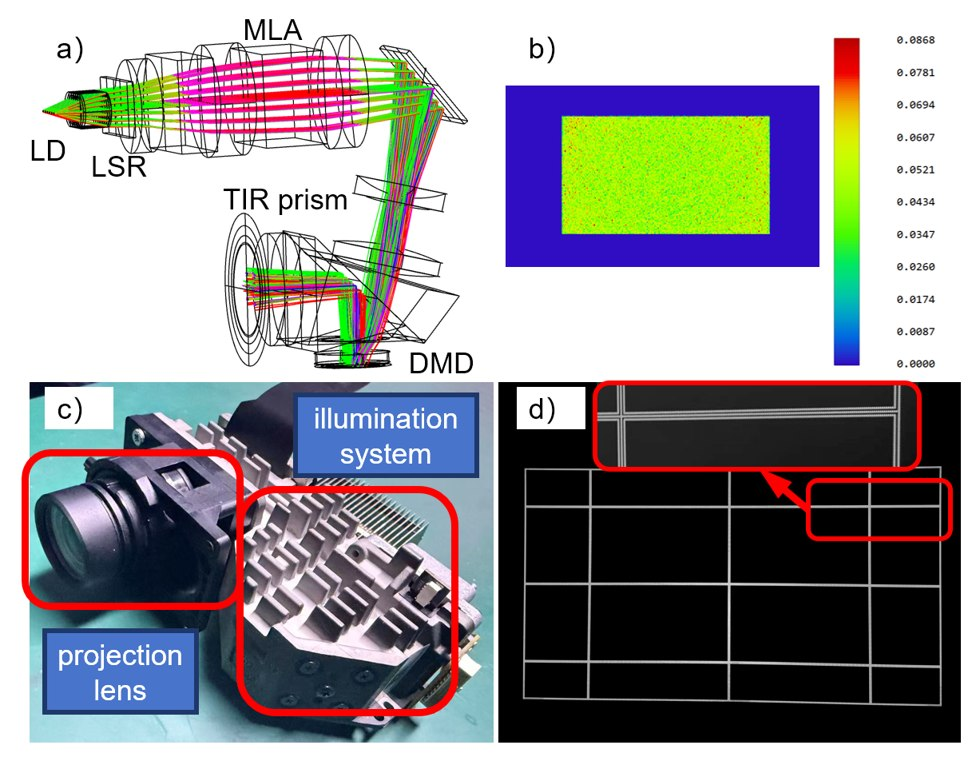
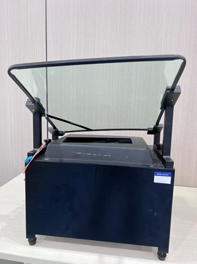
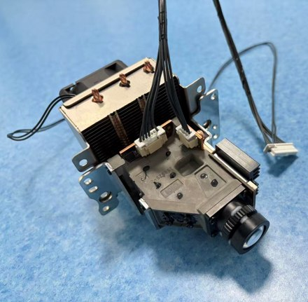
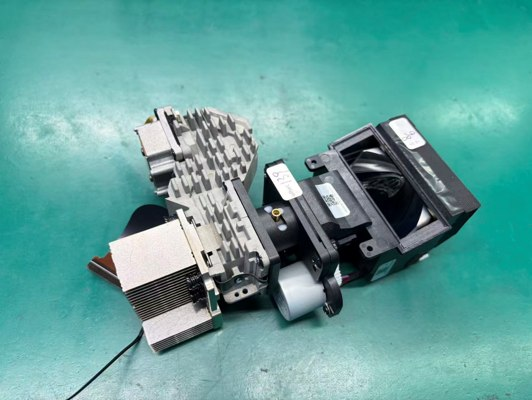
Developed a microscopic imaging and measurement system able to operate reliably for long periods under centrifuge-induced hypergravity and strong vibration, enabling real-time observation and algorithmic velocity measurement of micro-scale mechanisms inside microfluidic chips at 50g. Responsible for the optical layout, vibration analysis and cross-correlation velocimetry algorithms.
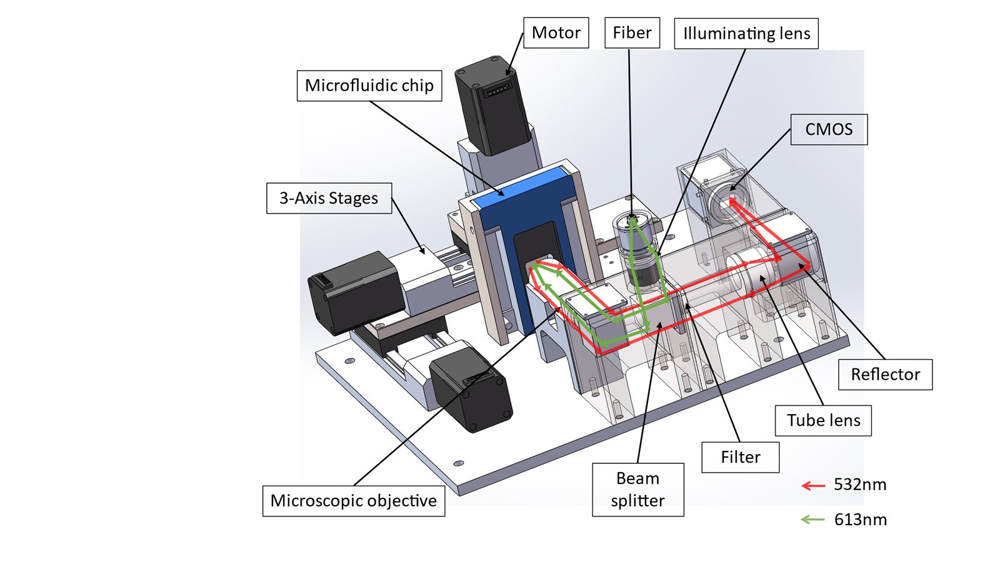
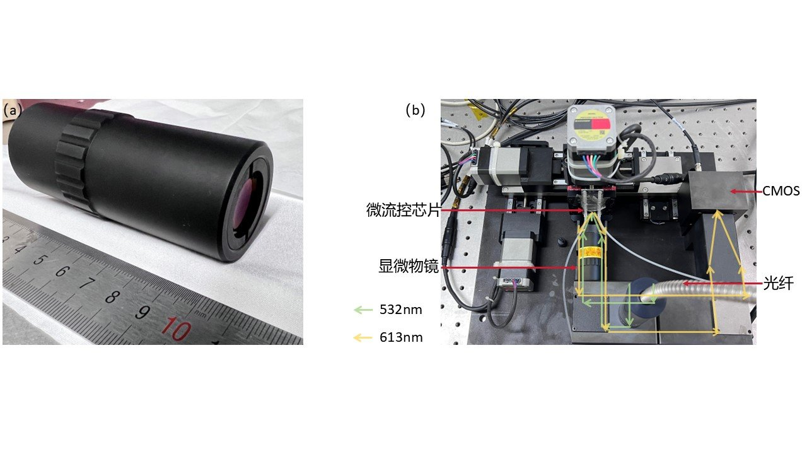
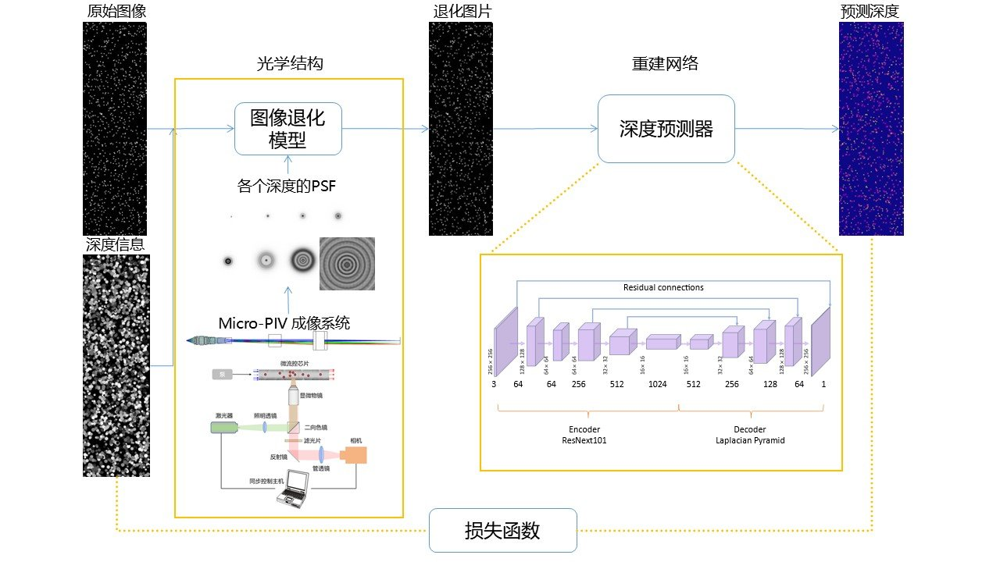
Designed a 182° field-of-view near-infrared ultra-wide-angle lens incorporating attenuation and filter elements. Completed the design independently and passed the client's design review.
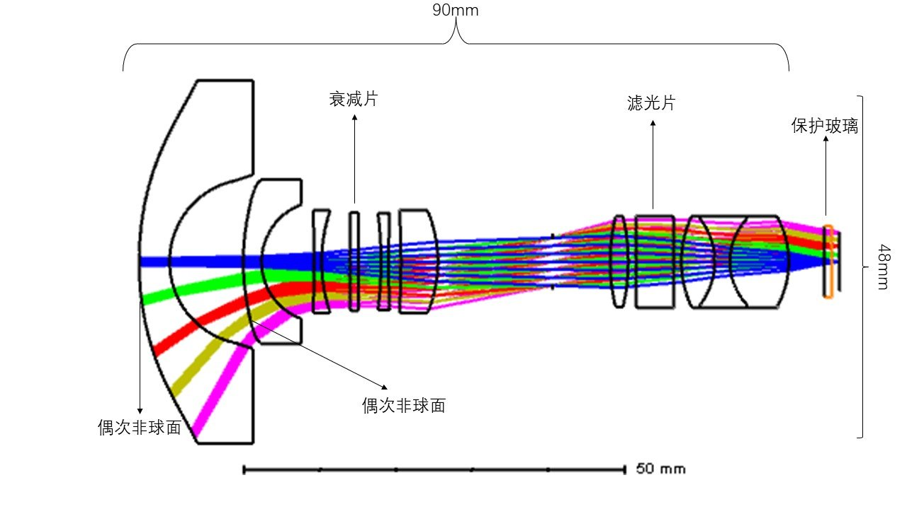
Designed an asymmetric projection optical system using cylindrical lenses for windshield projection imaging in airborne applications, with aspheric surfaces for aberration correction; the system achieves demagnification ratios of 1:40 along x and 1:10 along y.
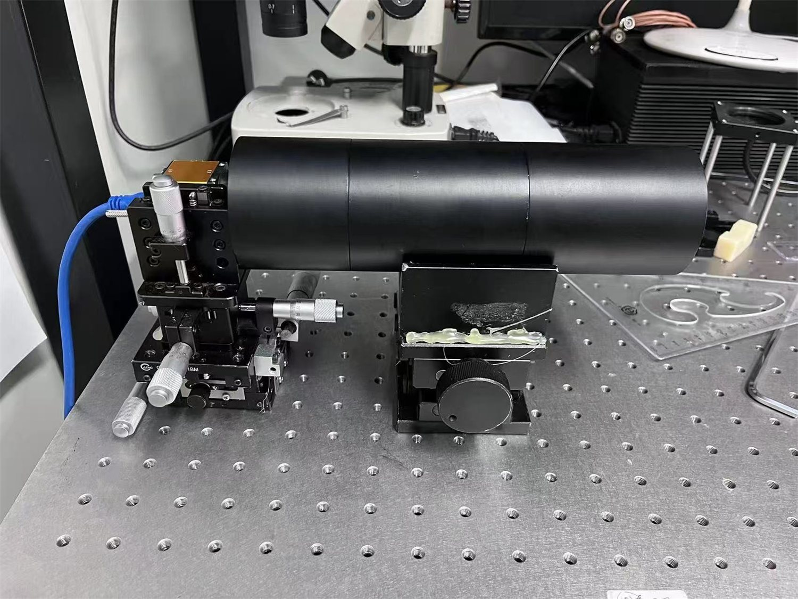
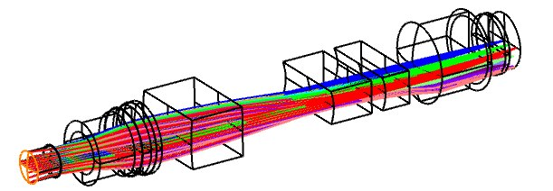
Other Information
Engineering Optics, Fifth Edition (Chinese)↗
I had the privilege of supporting work related to the publication of the fifth edition of Engineering Optics.
Optomech Workflow · Optomechanical Design Skill↗
An open-source AI skill I developed for optomechanical design. Starting from optical models, it helps reason through assembly sequences, positioning and retention, and generates section drawings and editable CAD drafts for SolidWorks and FreeCAD.
Competitions
Click an image to enlarge
- 2023
National First Prize, 11th National Optoelectronic Design Competition ("Yutong Cup"), Optical Design Track
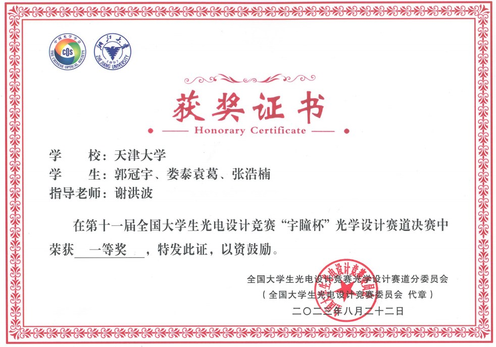
Award certificate - 2021
University Special Prize, "Challenge Cup"
- 2020
National First Prize, China Undergraduate Mathematical Contest in Modeling
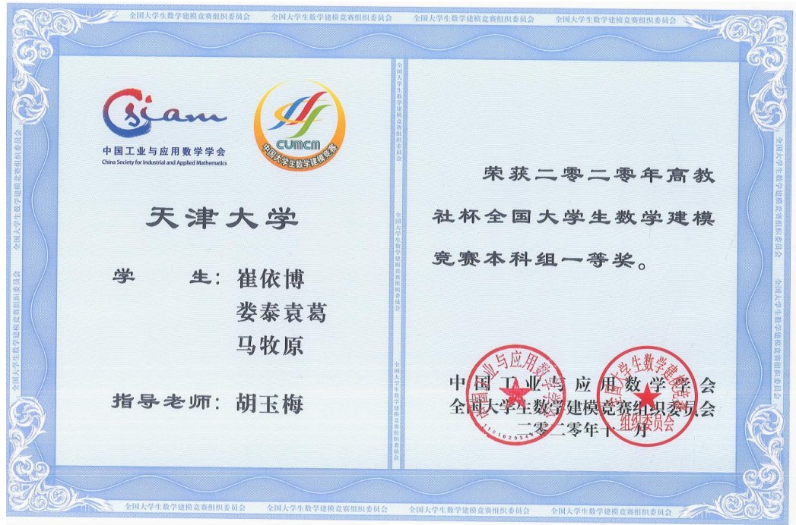
Award certificate - 2019
Third Prize, Chinese Mathematics Competitions (CMC)
Honors
- 2025
Tianjin University–Goertek Scholarship
- 2023, 2024
Graduate Second-Class Scholarship (twice)
- 2020
Contact
I am happy to hear about research or engineering collaborations in optical system design and computational imaging.
- Emailloutaiyuange@tju.edu.cn
- GitHubgithub.com/yogurt-lt
- ORCID0009-0004-0142-462X
- AffiliationSchool of Precision Instrument and Opto-Electronics Engineering, Tianjin University
- Address92 Weijin Road, Nankai District, Tianjin, China